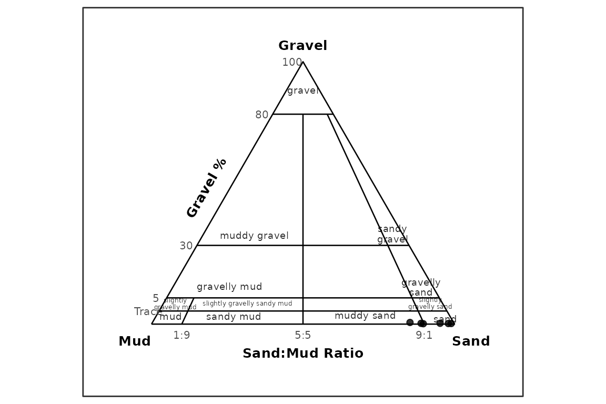
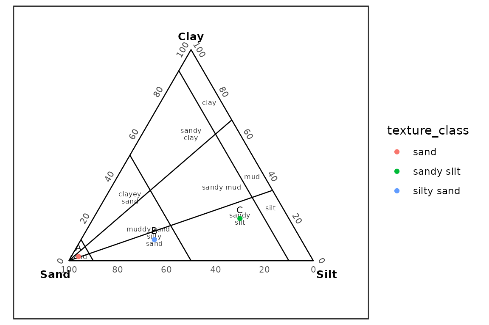

Replacing GRADISTAT and G2Sd Workflows
Source:vignettes/replacing-gradistat-g2sd.Rmd
replacing-gradistat-g2sd.RmdPurpose
This vignette shows how grainsizeR can serve as an R-native functional replacement for many GRADISTAT and G2Sd-style grain-size analysis tasks. It is not an Excel visual clone and does not claim byte-for-byte parity with workbook printouts.
What GRADISTAT and G2Sd Workflows Usually Provide
Typical workflows include importing retained grain-size data, calculating D-values and graphical statistics, describing sediment parameters, checking quality cautions, classifying texture, composing sediment names, and producing distribution, cumulative, fraction, and texture ternary plots.
grainsizeR Equivalent Functions
| GRADISTAT / G2Sd output | grainsizeR function | Notes |
|---|---|---|
| Retained grain-size input |
read_gsd(), read_gsd_wide()
|
Long and wide retained tables are supported. |
| D-values | gs_d_values() |
Percentile grain sizes with explicit extrapolation behavior. |
| D-ratio and D-difference descriptors | gs_d_spread() |
GRADISTAT-style spread descriptors. |
| Folk and Ward statistics | gs_folk_ward() |
Graphical statistics in R tabular output. |
| Moment statistics | gs_moments() |
Explicit open-end handling is required. |
| Modes and modality | gs_modes() |
Ranked retained-class modes and sample modality. |
| Fraction percentages |
gs_fractions(), gs_fractions_wide()
|
Built-in particle-size schemes. |
| Descriptive terms | gs_describe_parameters() |
GRADISTAT-style printout descriptors. |
| Quality cautions | gs_quality_flags() |
Sediment loss and open fine-pan advisories. |
| Summary table | gs_parameters() |
Combined R table for reporting. |
| Distribution plot | plot_distribution() |
ggplot output with metric and phi scales. |
| Cumulative curve | plot_cumulative() |
ggplot output with optional D-value markers. |
| Fraction plot | plot_fractions() |
ggplot stacked bars by sample. |
| Texture classification | classify_texture() |
USDA and GRADISTAT rule paths plus user polygons. |
| Sediment names | gs_gradistat_sediment_name() |
GRADISTAT-style composition from texture classes. |
| Texture ternary plots | plot_texture_ternary() |
Preferred terminology-correct alias;
plot_texture_triangle() remains available for
compatibility. |
Short aliases such as gs_fw57(), gs_frac(),
gs_diag(), and gs_qc() are available for
interactive work. The full names in the table remain the clearest
choices for reproducible scripts and method descriptions.
Input Data
long_file <- system.file("extdata", "grain.long.csv", package = "grainsizeR")
wide_file <- system.file("extdata", "grain.wide.csv", package = "grainsizeR")
gs <- read_gsd(
long_file,
format = "long",
sample_col = "sample",
size_col = "size",
value_col = "proportion",
size_unit = "mm",
value_type = "proportion"
)
gs_wide <- read_gsd(wide_file, format = "wide")
head(gs)
#> # A tibble: 6 × 13
#> sample_id bin_id raw_size_um size_lower_um size_upper_um size_mid_um
#> <chr> <int> <dbl> <dbl> <dbl> <dbl>
#> 1 S01 1 2000 2000 NA NA
#> 2 S01 2 1000 1000 2000 1414.
#> 3 S01 3 500 500 1000 707.
#> 4 S01 4 250 250 500 354.
#> 5 S01 5 125 125 250 177.
#> 6 S01 6 63 63 125 88.7
#> # ℹ 7 more variables: size_mid_phi <dbl>, retained_percent <dbl>,
#> # cum_finer_percent <dbl>, cum_coarser_percent <dbl>, is_open_lower <lgl>,
#> # is_open_upper <lgl>, measurement_method <chr>The wide dry-sieve example is used below for the GRADISTAT-style
gravel-sand-mud workflow. The long example includes finer fractions and
is used for USDA texture examples. Open-ended tails are not silently
extrapolated; calls that need extrapolation use
extrapolate = "warn_linear" explicitly.
Summary Statistics
head(suppressWarnings(gs_parameters(
gs,
parameters = c("d_values", "indices", "folk_ward", "fractions"),
d_values = c(10, 50, 90),
fraction_scheme = "gradistat",
extrapolate = "warn_linear"
)))
#> # A tibble: 6 × 41
#> sample_id D10_um D50_um D90_um D25_um D30_um D60_um D75_um Cu Cc
#> <chr> <dbl> <dbl> <dbl> <dbl> <dbl> <dbl> <dbl> <dbl> <dbl>
#> 1 S01 40.9 123. 390. 76.9 84.5 158. 233. 3.87 1.10
#> 2 S02 77.6 175. 412. 114. 128. 205. 267. 2.64 1.03
#> 3 S03 69.5 151. 402. 91.3 100. 193. 278. 2.77 0.748
#> 4 S04 60.2 125. 395. 81.2 88.5 167. 258. 2.77 0.780
#> 5 S05 62.2 123. 410. 80.1 87.2 167. 270. 2.69 0.731
#> 6 S06 76.1 216. 439. 104. 115. 273. 346. 3.59 0.641
#> # ℹ 31 more variables: So_trask <dbl>, Sk_trask <dbl>,
#> # fine_content_percent <dbl>, fine_threshold_um <dbl>, fine_equivalent <dbl>,
#> # interpolation_scale <chr>, D5_um <dbl>, D16_um <dbl>, D84_um <dbl>,
#> # D95_um <dbl>, D5_phi <dbl>, D16_phi <dbl>, D25_phi <dbl>, D50_phi <dbl>,
#> # D75_phi <dbl>, D84_phi <dbl>, D95_phi <dbl>, mean_fw_phi <dbl>,
#> # mean_fw_um <dbl>, sorting_fw_phi <dbl>, skewness_fw <dbl>,
#> # kurtosis_fw <dbl>, any_extrapolated <lgl>, mean_size_class <chr>, …D-Values and Spread Descriptors
head(suppressWarnings(gs_d_values(gs, probs = c(10, 50, 90), extrapolate = "warn_linear")))
#> # A tibble: 6 × 7
#> sample_id percentile grain_size_um grain_size_mm grain_size_phi
#> <chr> <dbl> <dbl> <dbl> <dbl>
#> 1 S01 10 40.9 0.0409 4.61
#> 2 S01 50 123. 0.123 3.02
#> 3 S01 90 390. 0.390 1.36
#> 4 S02 10 77.6 0.0776 3.69
#> 5 S02 50 175. 0.175 2.51
#> 6 S02 90 412. 0.412 1.28
#> # ℹ 2 more variables: interpolation_scale <chr>, extrapolated <lgl>
head(suppressWarnings(gs_d_spread(gs, extrapolate = "warn_linear")))
#> # A tibble: 6 × 15
#> sample_id D10 D25 D50 D75 D90 d_value_unit D90_D10_ratio
#> <chr> <dbl> <dbl> <dbl> <dbl> <dbl> <chr> <dbl>
#> 1 S01 40.9 76.9 123. 233. 390. um 9.54
#> 2 S02 77.6 114. 175. 267. 412. um 5.30
#> 3 S03 69.5 91.3 151. 278. 402. um 5.79
#> 4 S04 60.2 81.2 125. 258. 395. um 6.56
#> 5 S05 62.2 80.1 123. 270. 410. um 6.60
#> 6 S06 76.1 104. 216. 346. 439. um 5.77
#> # ℹ 7 more variables: D90_minus_D10 <dbl>, D75_D25_ratio <dbl>,
#> # D75_minus_D25 <dbl>, D90_D10_log_ratio <dbl>, D75_D25_log_ratio <dbl>,
#> # quartile_deviation_phi <dbl>, any_extrapolated <lgl>Modes and Modality
head(gs_modes(gs))
#> # A tibble: 6 × 12
#> sample_id sample_modality mode_rank mode_size_mm mode_size_um mode_phi
#> <chr> <chr> <int> <dbl> <dbl> <dbl>
#> 1 S01 trimodal_or_more 1 0.0887 88.7 3.49
#> 2 S01 trimodal_or_more 2 0.177 177. 2.5
#> 3 S01 trimodal_or_more 3 0.354 354. 1.5
#> 4 S02 unimodal 1 0.177 177. 2.5
#> 5 S02 unimodal 2 0.0887 88.7 3.49
#> 6 S02 unimodal 3 0.354 354. 1.5
#> # ℹ 6 more variables: mode_class_lower_mm <dbl>, mode_class_upper_mm <dbl>,
#> # mode_percent <dbl>, mode_class_label <chr>, is_open_interval <lgl>,
#> # mode_status <chr>Descriptive Terms and Quality Flags
head(suppressWarnings(gs_describe_parameters(gs)))
#> # A tibble: 6 × 19
#> sample_id bin_id raw_size_um size_lower_um size_upper_um size_mid_um
#> <chr> <int> <dbl> <dbl> <dbl> <dbl>
#> 1 S01 1 2000 2000 NA NA
#> 2 S01 2 1000 1000 2000 1414.
#> 3 S01 3 500 500 1000 707.
#> 4 S01 4 250 250 500 354.
#> 5 S01 5 125 125 250 177.
#> 6 S01 6 63 63 125 88.7
#> # ℹ 13 more variables: size_mid_phi <dbl>, retained_percent <dbl>,
#> # cum_finer_percent <dbl>, cum_coarser_percent <dbl>, is_open_lower <lgl>,
#> # is_open_upper <lgl>, measurement_method <chr>, mean_description <chr>,
#> # sorting_description <chr>, skewness_description <chr>,
#> # kurtosis_description <chr>, description_method <chr>,
#> # description_status <chr>
head(gs_quality_flags(gs, sediment_loss_percent = c(S01 = 1.2, S02 = 2.4)))
#> # A tibble: 6 × 6
#> sample_id quality_flag quality_status quality_value quality_threshold
#> <chr> <chr> <chr> <chr> <chr>
#> 1 S01 sediment_loss ok 1.2 <= 2%
#> 2 S01 open_fine_tail needs_additional_… TRUE reported explici…
#> 3 S01 fine_pan_fraction needs_additional_… 2.9952675 1% info; 5% warn…
#> 4 S02 sediment_loss warning 2.4 > 2%
#> 5 S02 open_fine_tail needs_additional_… TRUE reported explici…
#> 6 S02 fine_pan_fraction needs_additional_… 1.9336191 1% info; 5% warn…
#> # ℹ 1 more variable: quality_message <chr>Texture Classification
USDA major texture classification uses sand, silt, and clay
percentages. USDA sand-size modifier subclasses remain future work. The
bundled long-format example has no data below 63 um for any sample, so
its USDA clay/silt split is resolved via explicit linear extrapolation
(extrapolate = "warn_linear", with a warning) rather than
silently assumed. Samples where that extrapolation would be unreliably
large (a large gap between the finest measured boundary and USDA’s 2 um
clay threshold) are excluded below rather than shown as a silent guess;
a small extrapolation-driven overshoot past the natural 0% clay boundary
is clipped to 0 and the difference is proportionally redistributed
across sand/silt so percentages still sum to exactly 100.
usda_fractions <- suppressWarnings(gs_fractions_wide(
gs,
scheme = "usda",
normalize = "fine_earth",
extrapolate = "warn_linear"
))
usda_components <- c("sand_percent", "silt_percent", "clay_percent")
usda_matrix <- as.matrix(usda_fractions[usda_components])
usda_clipped <- pmax(usda_matrix, 0)
usda_clip_correction <- rowSums(usda_matrix) - rowSums(usda_clipped)
usda_keep <- stats::complete.cases(usda_matrix) &
apply(usda_matrix, 1, function(row) all(is.finite(row))) &
(-usda_clip_correction) <= 10
usda_fractions[usda_components] <- usda_clipped / rowSums(usda_clipped) * 100
usda_fractions <- usda_fractions[usda_keep, ]
head(classify_texture(usda_fractions, scheme = "usda", method = "rules"))
#> # A tibble: 6 × 11
#> sample_id sand silt clay texture_class_id texture_class
#> <chr> <dbl> <dbl> <dbl> <chr> <chr>
#> 1 S01 86.4 13.6 0 sand sand
#> 2 S04 86.4 13.6 0 sand sand
#> 3 S05 90.7 9.29 0 sand sand
#> 4 S19 83.5 16.5 0 loamy_sand loamy sand
#> 5 S20 86.2 13.8 0 sand sand
#> 6 S21 82.4 17.6 0 loamy_sand loamy sand
#> # ℹ 5 more variables: classification_method <chr>, rule_status <chr>,
#> # all_rule_matches <chr>, rule_conflict <lgl>, rule_gap <lgl>GRADISTAT texture classification supports the gravel-sand-mud and sand-silt-clay no-gravel bases.
gradistat_fractions <- suppressWarnings(gs_fractions_wide(gs_wide, scheme = "gravel_sand_mud"))
gradistat_fractions <- gradistat_fractions[
stats::complete.cases(gradistat_fractions[c("gravel_percent", "sand_percent", "mud_percent")]),
]
ssc <- data.frame(
sample_id = c("A", "B", "C"),
sand = c(95, 60, 20),
silt = c(3, 30, 60),
clay = c(2, 10, 20)
)
gsm_classified <- classify_texture(
head(gradistat_fractions, 6),
scheme = "gradistat",
method = "rules",
basis = "gravel_sand_mud",
include_sediment_name = TRUE
)
ssc_classified <- classify_texture(
ssc,
scheme = "gradistat",
method = "rules",
basis = "sand_silt_clay_no_gravel"
)
gsm_classified
#> # A tibble: 6 × 21
#> sample_id gravel sand mud texture_class_id texture_class ternary_basis
#> <chr> <dbl> <dbl> <dbl> <chr> <chr> <chr>
#> 1 S01 0.624 85.0 14.4 slightly_gravelly_m… slightly gra… gravel_sand_…
#> 2 S02 0.224 97.8 1.93 slightly_gravelly_s… slightly gra… gravel_sand_…
#> 3 S03 0.312 95.1 4.60 slightly_gravelly_s… slightly gra… gravel_sand_…
#> 4 S04 0.153 89.6 10.2 slightly_gravelly_m… slightly gra… gravel_sand_…
#> 5 S05 0.295 88.8 10.9 slightly_gravelly_m… slightly gra… gravel_sand_…
#> 6 S06 0.230 98.8 0.964 slightly_gravelly_s… slightly gra… gravel_sand_…
#> # ℹ 14 more variables: classification_method <chr>,
#> # classification_status <chr>, notes <chr>, sand_mud_ratio <dbl>,
#> # textural_group_class_id <chr>, textural_group <chr>,
#> # mini_texture_class_id <chr>, mini_texture_class <chr>,
#> # dominant_gravel_class <chr>, dominant_sand_class <chr>,
#> # dominant_silt_class <chr>, sediment_name <chr>, sediment_name_status <chr>,
#> # sediment_name_method <chr>
ssc_classified
#> # A tibble: 3 × 11
#> sample_id sand silt clay texture_class_id texture_class ternary_basis
#> <chr> <dbl> <dbl> <dbl> <chr> <chr> <chr>
#> 1 A 95 3 2 sand sand sand_silt_clay_no_…
#> 2 B 60 30 10 silty_sand silty sand sand_silt_clay_no_…
#> 3 C 20 60 20 sandy_silt sandy silt sand_silt_clay_no_…
#> # ℹ 4 more variables: classification_method <chr>, classification_status <chr>,
#> # notes <chr>, silt_clay_ratio <dbl>Sediment Names
gs_gradistat_sediment_name(gsm_classified)
#> # A tibble: 6 × 21
#> sample_id gravel sand mud texture_class_id texture_class ternary_basis
#> <chr> <dbl> <dbl> <dbl> <chr> <chr> <chr>
#> 1 S01 0.624 85.0 14.4 slightly_gravelly_m… slightly gra… gravel_sand_…
#> 2 S02 0.224 97.8 1.93 slightly_gravelly_s… slightly gra… gravel_sand_…
#> 3 S03 0.312 95.1 4.60 slightly_gravelly_s… slightly gra… gravel_sand_…
#> 4 S04 0.153 89.6 10.2 slightly_gravelly_m… slightly gra… gravel_sand_…
#> 5 S05 0.295 88.8 10.9 slightly_gravelly_m… slightly gra… gravel_sand_…
#> 6 S06 0.230 98.8 0.964 slightly_gravelly_s… slightly gra… gravel_sand_…
#> # ℹ 14 more variables: classification_method <chr>,
#> # classification_status <chr>, notes <chr>, sand_mud_ratio <dbl>,
#> # textural_group_class_id <chr>, textural_group <chr>,
#> # mini_texture_class_id <chr>, mini_texture_class <chr>,
#> # dominant_gravel_class <chr>, dominant_sand_class <chr>,
#> # dominant_silt_class <chr>, sediment_name <chr>, sediment_name_status <chr>,
#> # sediment_name_method <chr>Distribution and Cumulative Plots
Metric distribution and cumulative plots use particle size in
millimetres on a log-scaled x-axis by default, with major breaks at
0.001, 0.01, 0.1, 1, and 10 mm. Distribution bars are centered at
particle-size classes. Use particle_unit = "um" for
micrometre axes. They show one sample at a time; loop over samples or
arrange returned plots externally for multi-sample figures. Lower
open-ended classes are displayed at 0.0015 mm, or 1.5 um, for plotting
only; calculations are unchanged.
plot_distribution(gs_wide, sample = "S01", cumulative = TRUE)
suppressWarnings(plot_cumulative(
gs_wide,
sample_id = "S01",
show_percentiles = c(10, 50, 90),
extrapolate = "warn_linear"
))
plot_fractions(
gs_wide,
scheme = "gravel_sand_mud",
sample_id = c("S01", "S02"),
fill_palette = "YlOrBr"
)
Texture Ternary Plots
GRADISTAT gravel-sand-mud ternary plots place Gravel at
the top, Mud at the lower-left apex, and Sand
at the lower-right apex. The plotting functions draw ternary guides for
gravel percentage and sand/mud ratio directly on the diagram and
suppress ordinary Cartesian x/y axes.
plot_texture_ternary(
gsm_classified,
scheme = "gradistat",
basis = "gravel_sand_mud",
point_id = "sample_id"
)
plot_texture_ternary(
ssc_classified,
scheme = "gradistat",
basis = "sand_silt_clay_no_gravel",
point_id = "sample_id"
)
What Differs From Excel-Based GRADISTAT
grainsizeR returns R objects, not fixed spreadsheet worksheets. Plots are ggplot objects and can be styled or combined with ordinary R tools. The package does not copy GRADISTAT VBA code, chart objects, or workbook printout layouts.
What Is Not Claimed
This vignette does not claim full Excel visual parity, byte-for-byte output identity, complete modified Udden-Wentworth subclass parity, or a CRAN release claim. It demonstrates a functional replacement for the implemented package scope.